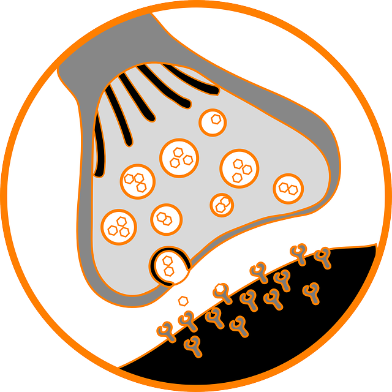

Neuron or nerve cells are the fundamental units of our brain. Our brain is made up of about 86 billion neurons. All the thoughts in our mind are the result of the communication between the neurons in our brain. Neurons communicate with each other through the connections which is called as a synapse. A synapse is connection between two neurons. Our brain has upto 125 trillion synapses. These synapse between the neurons forms a very complex network called brain which is capable of performing many functions.
Each neuron has a cell body, dendrite, axon and terminals. The dendrite receives impulse(electrical signal)from other neurons. The impulse received from dendrite is passed over the cell body and travel through the axons. The impulse then reaches the terminals. The terminals have connections with other neurons which is called a synapse. The connection between two neurons have gap called synaptic cleft. The impulse will jump over the synaptic cleft to reach the other neuron. These connections between thousands of forms a circuit. Each ciruit is capable of performing a specific function. Our brain has millions of circuits like this.
Brain is basically classified into left hemisphere and right hemisphere. Each hemisphere looks identical. But some functions are different between them. Some of the main parts of the brain are:
Cerebrum covers most part of the brain. Cerebrum is functionally divided into many parts. Each part and its function is given below
The limbic system is called is emotional brain because it controls all our emotions. The parts of the limbic system with its function is shown in the below table
The brain stem consists of following parts: Medulla oblongata, Pons, Midbrain. These brain areas performs many vital functions like controlling heart beat, respiration rate, blood vessels dilation & relaxation, etc.,
The cerebellum controls the coordinated movement between our body parts eg., While we are walking, the movement of both legs should be coordinated with each other. The cerebellum also controls the fine tuned movements eg. While writing the movements of the fingers together should be accurate. This type coordinated and fine tuned movement is controlled by cerebellum.